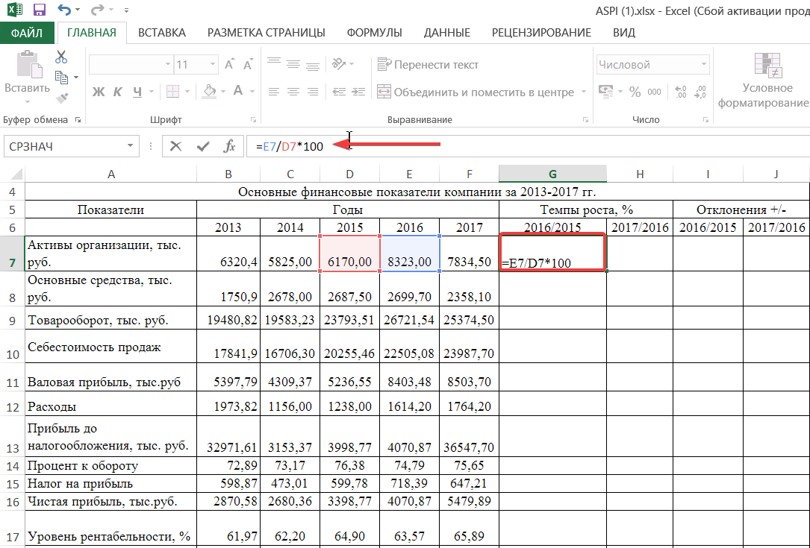
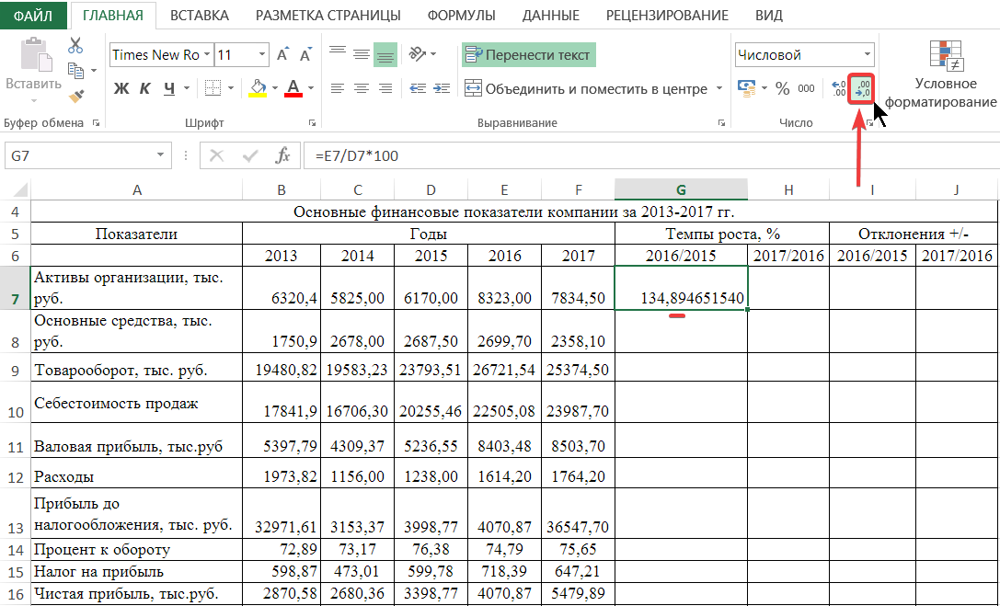
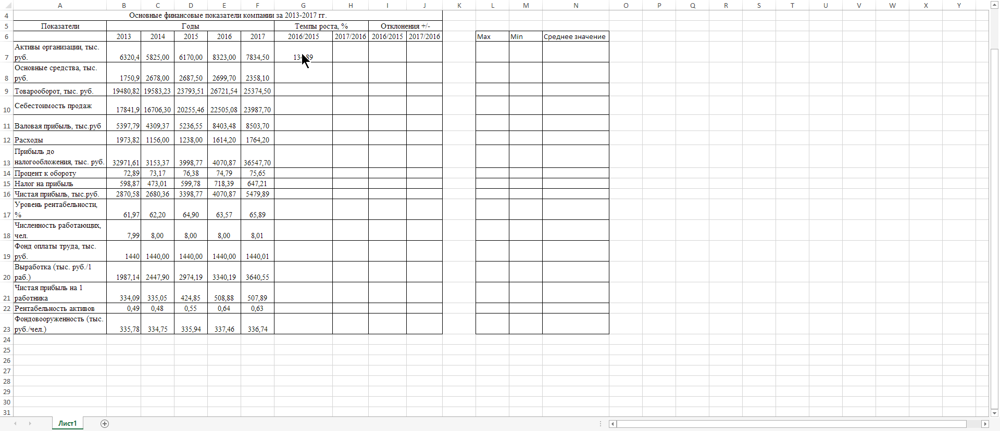
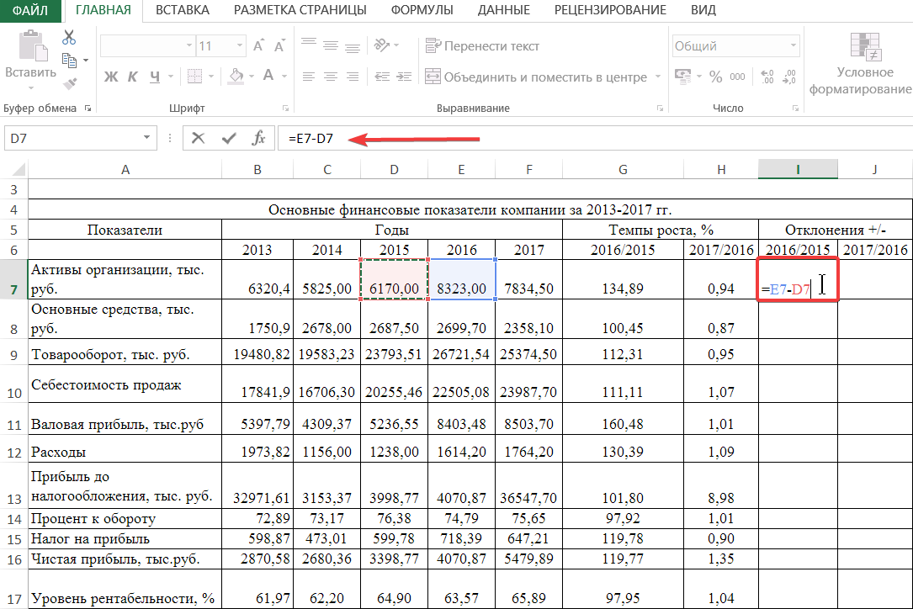
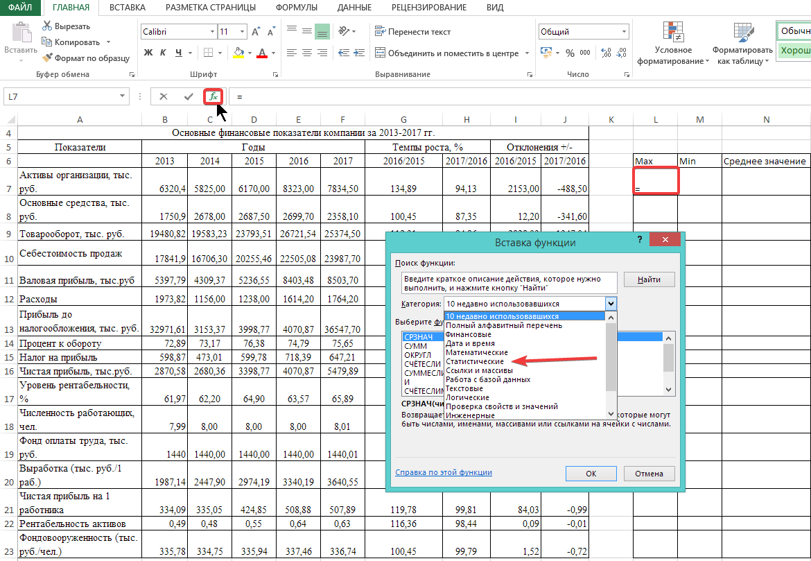
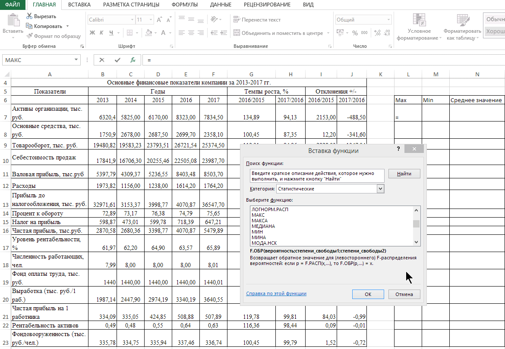

Тема: применение статистических функций в MS Excel
Цель выполнения практической работы: применить статистические функции при изучении темы по микроэкономике.
Задачи, решающиеся в ходе выполнения работы.
Необходимо найти темпы роста и отклонения результатов за последние 2 года. С помощью статистических функций выявить максимальное, минимальное и среднее значение каждого показателя за весь период.
Алгоритм выполнения работы:
Прочитать внимательно условие задачи, представленное в электронной таблице.
Расчет задачи проводите в созданной рабочей книге Excel на ярлыке листа 1.
Найти темпы роста в процентах. Значение ячейки 2016 года поделить на значение 2015 г, умножить на 100. Сделать аналогичным образом период 2017-2016г.

Рисунок 1 – Нахождение темпа роста
На вкладке "Главная" в группе взаимосвязанных элементов управления "Число" уменьшить количество знаков после запятой до сотых, нажатием кнопки «Уменьшить разрядность».

Рисунок 2 – Уменьшение разрядности
Продлить формулу до конца диапазона. Аналогичным образом рассчитать значения показателей периода 2017/2016 г.

Рисунок 3 – Продление формулы
Найти отклонения значения показателя ячейки 2016-2015г. Из значения показателя ячейки 2016 года вычесть значение показателя ячейки 2015 г. Продлить формулу до конца диапазона. Аналогичным образом рассчитать значения показателей периода 2017/2016 г.

Рисунок 4 – Нахождение отклонения
С помощью статистических функций найти максимальное, минимальное, а также среднее значение каждого из показателей за период с 2013-2017 гг.

Рисунок 5 – Статистическая функция

Рисунок 6 – Выделение диапозона для ститистической функции.
Итоговый результат выполнения работы – правильным образом заполнены все ячейки.
В ходе проведения практической работы студенты изучили статистические функции, вспомнили о продлении функции на весь диапазон.